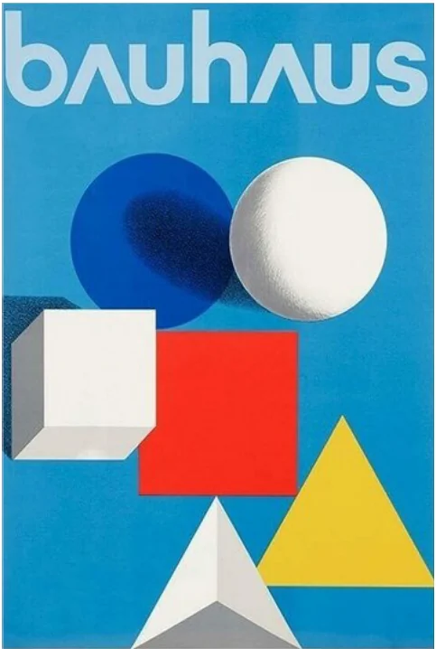
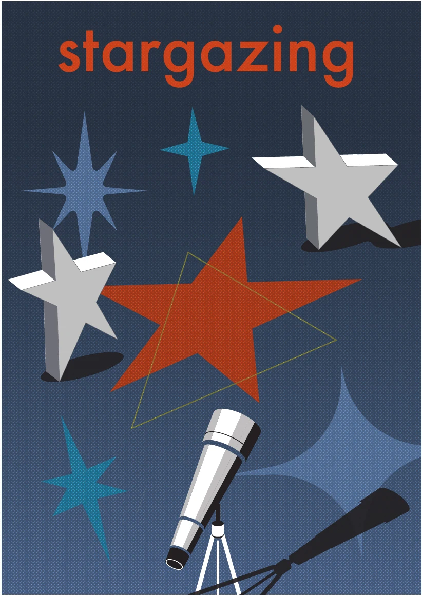

イメージ元のビジュアル

- ・ベタ塗りの図形と立体感のある図形が含まれている
・それぞれの図形のサイズは同じくらい
→ポスター全体に目がいく - ・ベタ塗りの図形は背景との明度差が小さく、立体の図形は明度差が大きい
→ベタ塗りの図形が沈んで見えて、立体が目立つようになっている - ・ベタ塗りの図形は彩度が高いのに対し、立体感のある図形は無彩色
→対比を作っている、より立体感がわかりやすい - ・図形はシンプルな形
再解釈して作成したオリジナル作品


